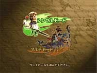
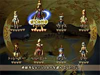
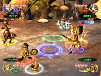
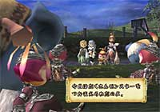
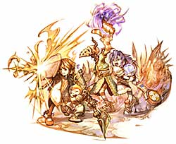

N.O.M ユーザーターゲットはこのへん、と考えていますか？
青木 これはかなり幅広い年代が出来るんじゃないかとは思いますね。
板鼻 発売する時期が夏休みなので、小学生〜中学生くらいの子たちが集まって、みんなでプレイしてもらえたらいいなと思ってます。また、親子でプレイしてもらっても楽しいと思いますね。お父さんが子供さんに怒られながらやってたり。子供のほうがアクションは上手ですから(笑)。
N.O.M 攻略のポイントはどうでしょう。シングルモードでやる人も多いと思うんですが…。
青木 まずは魔法をなるべく先に集めていった方がいいと思います。あとはモンスターによって弱点が違うので、それを見つけて合体魔法で効率よく倒していくことができれば、かなり楽に進められると思います。ただ、シングルプレイに慣れちゃうと、今度は多人数プレイが難しくなると思うんです。自分でファイアを３個取ってしまったり。マルチプレイだと、ファイア３個取っても意味がないんですよ。マルチの場合は誰かと合わせて合体魔法を使わないと、ファイガなんかは出ないんです。マルチのほうで「これとこれを組み合わせるとこの魔法になるよ」という説明は出していないので、シングルモードで色々組み合わせて試してみるといいんじゃないでしょうか。
N.O.M シングルモードとマルチモードではまったく違う形なんですね。
青木 遊び方としては、シングルとマルチではかなりの違いがあります。
N.O.M 例えば大人なんかだと、友達で集まってプレイというのは難しい気がするんですが…。
青木 今回は"おでかけ"という機能がついているので、どうしても厳しい所なんかは友達のキャラを借りて協力してもらうことも出来るんです。みんなで集まらなくても、たまに貸し出してもらえば結構いけると思います。
N.O.M GBAを使ったレーダー機能ですが、お互いのデータが見えないようにしたのはなぜですか？
青木 せっかく集まってやるわけですから、ボタンを連打して黙々とやるのではなくて、声を掛け合って情報交換をしゃべりながらしてもらいたいということなんですよ。あまりテキストが出てこないというのも、４人で同じテキストを眺めているよりは、会話を楽しんで欲しいということからです。
N.O.M 魔法が使い捨てなのはなぜなんでしょう。ひとつのダンジョンをクリアーすると、まっさらな状態に戻ってビックリしたんですが(笑)。

青木 これもみんなで会話して、協力しあって役割分担して欲しいからなんです。誰が回復役、誰が攻撃役…みたいに決まりきったことをするのではなくて、今回は僕が白魔導師役やるよとか、じゃあ僕が攻撃魔法は担当するよみたいに変えていかれれば、ということなんです。そのときそれぞれのやり方があるでしょうから。
N.O.M 難易度設定に関しては、どうお考えですか？
青木 普通にプレイすれば普通にクリアーできるはずです。どうしても出来ない所は、お友達を呼んで協力してもらうとか。友達のキャラクターを借りるという楽しみもあるので、ぜひやってみて欲しいですね。ストーリー重視ではないので、クリアー自体はそんなに大変ではないと思いますよ。
N.O.M １年目、２年目…というカウントですが、年数の上限はないんですか？
青木 ありませんね。制限なくずーっとやり続けることもできます(笑)。気が向いたときに、ラストダンジョンへ入って行ってもらえばクリアーできますよ。
N.O.M テストプレイヤーの評判はいかがでしょう。
青木 パーティによって戦略が違うようですね。それぞれ千差万別だなっていうのは感じました。チームワークの良さが重要なんですが、バラバラな行動でも倒されながらクリアーできるので(笑)。
板鼻 どんな遊び方をしても大丈夫というのがありますから。自由度が高いという点では、かなり幅広く遊べると思いますよ。
青木 ゲーム誌の編集さんなんかは、周りの人から「うるさい！」と言われたりしているようです。声を出し合ってやると、どうしても仕事場に響きますから(笑)。
N.O.M プレイするにあたって、どんな風に楽しんで欲しいですか？
青木 参加する人の個性が出るパーティになると思うんです。例えば大人がやるとボーナス条件を見て、それによって周りを無視して自分がそれで動いちゃう人がいるんですよね。「アイテムをたくさん取る」だったら、メンバーなんかどうでも良くてアイテムを漁りまくったり(笑)。プレイする人同士のやり取りを楽しんで欲しいですね。
板鼻 対人関係が反映されるゲームだと思うので(笑)、友だち同士でやるときと、お父さんと子供でやるときなんかでは、プレイスタイルが違ってくると思うんですよね。家族のなかでも楽しんでいけると思いますよ。従来のFFのように、ストーリーを追って急いで解いていかないと…というような形のものではないので、ゆっくりとみんなで遊んでもらえたらなと。
N.O.M 制作者としては、どこが魅力だと思われますか。
青木 多人数プレイをしたときに、互いにどういうやり取りをしているかというのを、うしろから見ているのがいちばん面白いんですよ(笑)。
板鼻 １画面のなかで４人プレイしているときに、それぞれが面白い動きをするわけですよね。闘っている人間もいれば逃げ回ってる人がいて。ひとりひとりの個性を、１画面のなかで見ることが出来るという部分が楽しいと思います。
N.O.M 今後このシリーズが発展していく予定はあるんでしょうか。

青木 売れ行きを見ないと何とも言えませんが(笑)。昔から多人数プレイするゲームが好きだったんですよ。いままで４人プレイのゲームってたくさんありましたけど、画面上でそれぞれが好き勝手に動いて…というのが多かった気がするんです。でも、これはバラバラに行動しないで出来るように、ということで作ったんで。それが生かせればいいなとは思います。
板鼻 今回は本当にマルチプレイの良さを出せたと思うので、その評価を待って…という感じですね。
N.O.M ユーザーへのメッセージをお願いします。
青木 色々な遊び方ができると思うので、それぞれ好きにやって欲しいですね。このゲームは、本当に自由度が高いので。一緒にやる相手によって、プレイスタイルが変わるのが面白いと思いますよ。
板鼻 みんなで声を掛け合って、ワイワイ言いながらやって欲しいですね。
N.O.M どうもありがとうございました！ |